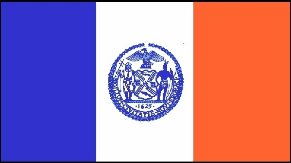
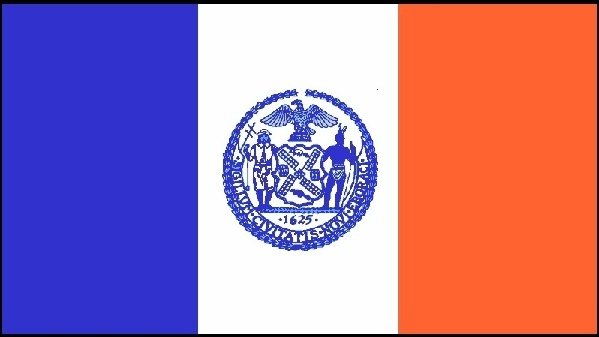

Established 1998.
Copyright © 2018 Steve Shaw & Manny Siverio. All rights reserved.
Marlon's team would like to thank Steve Shaw & Manny Siverio for so generously working on this site for 20 years! It is an excellent resource for the NYC Salsa/Mambo scene, which is why we are so honored to continue their work. Please bear with us as we update the site.
For more information about Marlon International, please visit MarlonIntl.com and Facebook.com/SalsaNYC.
 

Established 1998.
Copyright © 2018 Steve Shaw & Manny Siverio. All rights reserved.
|
|
About |
Dancer's Guide |
Dancer's Magazine |
|
Our Purpose & Policies Please read the following information once. Traduzca Este Web Site Welcome To "On 2" NY Style Mambo Dancing Salsa On 2 Description, Instructors, Training Videos. The Story Of This Web Site How To Navigate This Web Site
See Alphabetical Index Just Below
You Can Look Up Anything You Want To Find
|
Where To Go
Old School Events Calendar
Other Latin Events Calendar Future Local Mambo Events Major Salsa Events How To Get Your Event Listed Disclaimer For Info On The Other Latin Events Calendar Calendar of Other Salsa Events & Clubs Geographical Listings of General Latin Events & Clubs
Alphabetical Index for Entire Site
|
Lots Of Salsa Directory of Mambo Performing Groups Performer's Songs On CD Good Salsa & Cha Cha Dance Songs & Guidelines for DJ's Where To Buy Latin Music Hear Latin Music on Radio, TV & Internet - & Latin Magazines How To Put On A Salsa Event Studio Space For Rent Where to Buy & Repair Shoes for Dancing Street Shoes Or Dancing Shoes - Which Shoes For Different Dance Surfaces? Where To Buy Salsa Clothes, Costumes, Accessories, Ear Plugs, Trophies - The Salsa Museum How To Find Salsa Clubs & Events Anywhere In The World Links SalsaHolics Anonymous How To Find The Perfect Salsa Dance Partner, Husband or Wife
|
How We Dance: Technique, Background & Instruction Definition of "Dancing Salsa On 2" How To Learn Our Dance The Clave The Downbeats The Tumbao We Start On The Downbeat & Break On The Clave & Tumbao Dance Floor Psychology & Strategy, Getting More Partners, & Proper Etiquette The Roots & Evolution of NY Salsa Music & Dancing Salsa Dance Timing & Style Learn To Dance Salsa On 2
Alphabetical Index for Entire Site
|
Salsa News, Instructors & Dance Visitors Information
Special Workshops Studio Space For Rent Salsa Guide For Dancers Visiting New York 10 Day Weather Forecast For New York City Manny's Own Business Web Site
See Alphabetical Index Just Below
You Can Look Up Anything You Want To Find
|
Our Salsa Dancing Online Magazine Manny's Introduction To The Latest Issue New Articles This Month More Salsa Articles Beginner Articles How To Submit A Dance Article On 2 Mambo Web Sites Photo Of The Month "New York Style" Mambo Instructors Outside of NY
Alphabetical Index for Entire Site
ACCU-WEATHER
|
|
Alphabetical Index For Entire Site |
|